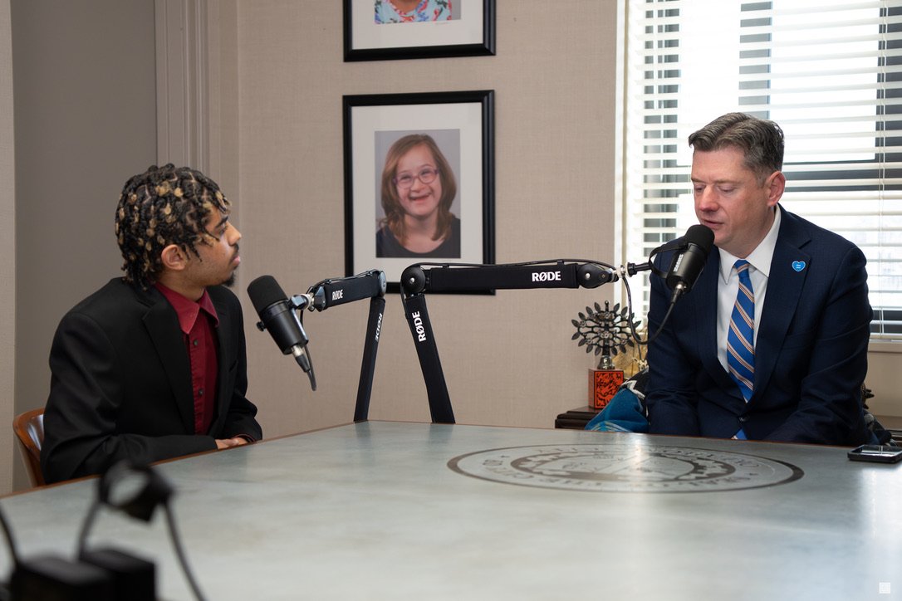

BE THE CONNECTOR: DERRICK SIER ON MENTORSHIP, COMMUNITY, AND POSITIVE ADULT INFLUENCE
This episode explores how mentorship shapes identity, why positive adult relationships matter outside the home, and how one connection can help change the trajectory of a young person’s life.